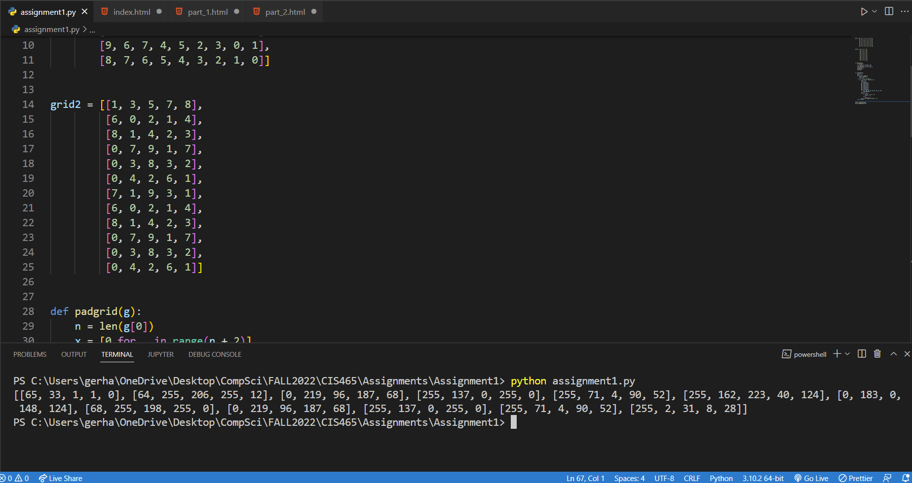

Here I turned the program into a method and inputted the second list I created that has different dimensions. As we can see, the output still performs the encoding and outputs a 2d list that is the same size as the input. I did use another method to apply a padding around the lists, which acts as a padding we would use to add to a photo with the cv library.